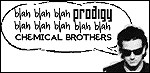
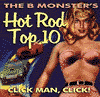
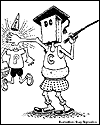
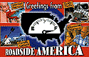

|
#1
Guerrilla Girls The Guerrilla Girls describe themselves as "the conscience of the art world." Made simultaneously formidable and anonymous by their furry gorilla masks, these bold women crusade against sexism and racism prevalent in the art world. The Girls are perhaps most famous for their thought-provoking posters, which highlight questions and answers such as "Q: If February is Black History Month and March is Women's History Month, what happens the rest of the year? A: Discrimination," and "Do women have to be naked to get into the Metropolitan Museum? Less than 5% of the artists in the Modern Art Sections are female, but 85% of the nudes are female." The fact that the site lets you view posters from years past and talk back to the "faceless group fundamentally changes the Guerrilla Girls experience--from transient to permanent, from anonymous to accountable. It's just what the movement needed. |
|
#2
Smug Smug is sarcastic. Oh yes, it's smug and priggish, too, but wonderfully sarcastic. The new e-zine places a magnifying glass over mainstream media, newspapers, musicians and filmmakers, and burns 'em. There were 19 different column sections when we last looked, with content ranging from horror stories about modern love to decompositions of pop songs like No Doubt's "I'm Just a Girl." Be sure to check out the column, "Target Audience," a monthly essay that ponders, with hysterical results, "Who are those ad guys talking to?" The e-zine sometimes degrades into condescension, but is always wonderfully smug. |
 |
|  |
#3
The Astounding B Monster Filmgoers who like to cruise the oft-neglected B-movie shelves at the local ma-and-pa rental shack will get a thrill from reading what's probably the best online "offbeat film authority." The authors of the site are unabashed bad cinema fans, and give proper respect, and often disrespect to cult, sci-fi and horror films like Reform School Girls (1958) and Beast With 1,000,000 Eyes (1956). Rather than rate the schlocky films purely on their acting and directorial merits (what would be the point,anyway? They're B films, for crying out loud), the site's reviewers provide grades for "Atmosphere" and "Fun." Overlooked and discounted for years, this neglected genre has finally been vindicated. |
|
#4
The Straight Dope What are the real lyrics to "Louie Louie"? When they execute a guy by lethal injection, do they swab off his arm first? These are the kinds of questions answered by intrepid investigator Cecil Adams in his syndicated column "The Straight Dope." If you can't get your weekly fix of "The Straight Dope" from your local alternative newspaper, experience it on the Web at this official site, which archives the columns a mere three days after they come out in print. The site lets you read "the most recent 52 weeks" of the column, with a caveat: "Before you start penning missives complaining that there is only a year of columns available and that 'information wants to be free,' please remember that this information actually wants to one day be bundled up and sold for $9.95 at a store near you." E-mail your own factual question for a crack at an informative, though possibly insulting, response ("If ignorance were corn flakes, you'd be General Mills"). No question's too bizarre, Cecil says, so if you've been up nights wondering what the "H" in "Jesus H. Christ" stands for, this site may be your ticket to a sound sleep. |
 |
|
#5
History Channel Even if it hasn't caught on with your cable carrier, The History Channel has made it to the Web with a surprisingly (for a TV channel!) enlightening site. Visit a virtual Ellis Island, or shop for authentic historical documents--including a first edition of Thomas Paine's Common Sense. At a Shockwave game called Tomb of the Pharaoh, you can learn the disgusting details of Egyptian embalming methods (we found out how a "brain hook" was used). And don't miss This Day in History, which gives a rundown of notable world events on any day of the year you choose: March 1, it turns out, is the day FM radio was first broadcast (1941). And on that day in 1937, U.S. Steel raised workers' wages to $5 a day: "That's right. About 40 cents an hour. Now, punch that time clock and quit your complaining." |
|
#6
Roadside America There are two types of road-trippers: those who obliviously speed down the interstate racing to their destination, and those who take the time to exit the highway and see the balls of twine and houses of mud that dot the back roads of America. This site is for the latter. An extension of the popular book by the same name, this massive site is a must-visit before setting out on even the shortest of car journeys--there might even be an attraction in your vicinity (we found a funeral home near our office that doubles as a miniature golf course). |
 |
|
#7
Theatre Central Stagestruck surfers everywhere should find Theatre Central to be a singularly sensational site. With 20 links for Shakespeare Festivals alone, it may well live up to its claim to have "the largest compendium of theatre links on the Internet." Beyond the staggering (and well-organized) list of resources, though, Theatre Central has plenty of content of its own, with articles like "Relaxation: The Key to Emotional and Physical Strength" and "The Crucible (For Less Than $2,000)." When we visited, a virtual Call Board was in the works for aspiring actors who want to browse help-wanted ads and casting calls online. We're psyched--we've already started growing out our locks in anticipation of another Hair revival. |
|
#8
April Fools' On the Net Perhaps the only group more prevalent on the Net than pornographers are pranksters. Forever finding new and creative ways to disturb and upset the balance of things, these mischievous individuals have found special pleasure in posting phony messages to Usenet. Collecting some of the best in April Fools' tomfoolery, April Fools' on the Net provides the Top 20 dupes of all time, and a timeline of online pranks reaching as far back as 1984. Some of the most amusing postings: "Microsoft Bids to Acquire Catholic Church," "Creators Admit Unix a Hoax," "Microsoft Windows for the Macintosh," and "McDonalds and EUnet join to offer Global 'Internet in a Lunchbox.'" Often funnier than the postings themselves, be sure to read the responses by the many fools who were actually suckered by the pranks. |
|
#9
This Modern World Not much flash here, but if you're a fan of the cartoonist/political satirist Tom Tomorrow (a.k.a. Dan Perkins), you'll love the archive of his weekly comics that make up the bulk of the site. If you're not a fan, you soon will be after reading a couple of installments of "This Modern World," where Tomorrow, with the help of Sparky, the funniest cartoon penguin since Chilly Willy, skewers figures from both the left and right--and even those in the great in-between. |
|
#10
Cars @ Cost Finally, an Internet service that takes the guesswork, haggling and insecurity out of buying a new car. Cars @ Cost's auto-buying network saves you money and hassles--not only do they provide information on factory invoice prices and find you amazing deals, but they also arrange for all of the details of selecting and obtaining the car. Don't sweat, shake and stammer your way through this massive purchase any longer; let Cars @ Cost do the negotiating for you. |